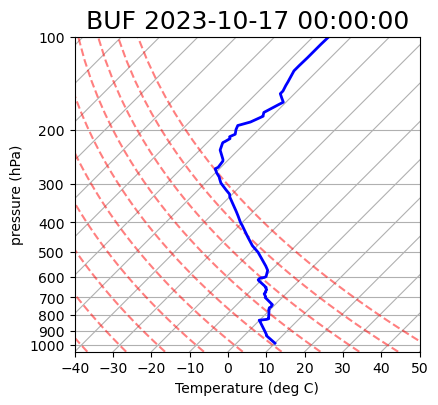

The First Law and Its Consequences
Contents
5. The First Law and Its Consequences
Supplement to Chapter 5 of A First Course in Atmospheric Thermodynamics by Grant W. Petty, Sundog Publishing, 2008
Plotting dry adiabats on a Skew-T diagram
Import necessary packages
import matplotlib.pyplot as plt
from datetime import datetime
from metpy.plots import SkewT
from siphon.simplewebservice.wyoming import WyomingUpperAir
Grab some data
date = datetime(year=2023, month=10, day=17, hour=00) # year, month, day, hour
station = 'BUF' # station code for Buffalo, NY
df = WyomingUpperAir.request_data(date, station)
Make a plot
fig = plt.figure(figsize=(9, 9))
skew = SkewT(fig=fig, subplot=(2,1,2), rotation=45)
skew.plot(df['pressure'], df['temperature'],
'b', linewidth=2)
skew.ax.set_title(f'{station} {date}', fontsize=18);
skew.plot_dry_adiabats() # some nice automation from the MetPy package here
skew.ax.set_xlabel('Temperature (deg C)')
skew.ax.set_ylabel('pressure (hPa)');
